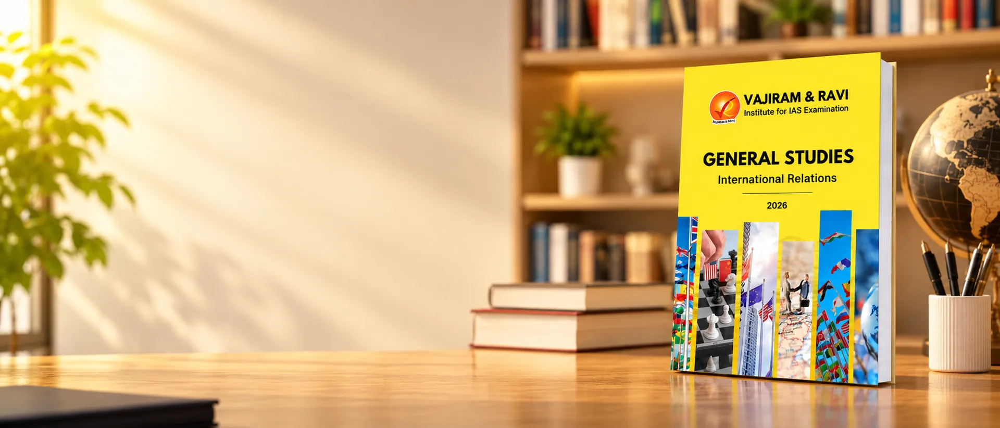

300+Lectures
300+ class lectures
The whole General Studies syllabus for Prelims and Mains, taught from the basic to the advanced level.
General Studies · Classroom
General Studies Prelims cum Mains Programme, by Vajiram & Ravi.
One programme for the Civil Services Examination 2028 that brings together classes, study material, revision, tests and mentorship, from the basics to the advanced level.
Prefer to study online? UPSC GS Online Course 2028
Course overview
With more than five decades of preparing aspirants for the Civil Services Examination, Vajiram & Ravi knows that success takes more than completing the syllabus. The UPSC General Studies Prelims cum Mains Programme 2028 brings learning, revision, testing and mentorship together through the whole preparation cycle, from the basic to the advanced level.
300+ lectures over 900+ hours by experienced subject specialists, 2.5 hours a day, every day of the week.
The knowledge, analytical ability and examination skills that Prelims and Mains ask for, built up step by step.
Prelims teaching and testing, a free six-month Mains Support Programme, and a free Interview Guidance Programme on clearing Mains.
What you get
One fee covers all of it: the Mains Support Programme, and the Interview Guidance Programme once you clear Mains, are part of the programme.
300+Lectures
The whole General Studies syllabus for Prelims and Mains, taught from the basic to the advanced level.
900+Hours
Delivered by experienced subject specialists.
2.5Hours a day
Each class runs 2.5 hours, 2:30 PM to 5:00 PM, every day of the week.
Online
Access to revision classes: every class lecture can also be watched online.

18Yellow Books
Around 18 Yellow Books, made for the requirements of the Civil Services Examination, covering General Studies for Prelims and Mains as per the UPSC syllabus.
12A year
The monthly current affairs magazine: hard copies from the office for classroom students, a PDF on the portal for online students.
30Tests
30 Prelims tests covering General Studies and current affairs.
Free6 months
As you progress
Mentoring
Access to mentoring during the course, to clear doubts and get guidance on your preparation.
Until Prelims 2029
Classes, objective and subjective tests, supplementary study material, daily current affairs, articles, class schedules and announcements.
Until Prelims 2029
Current affairs content support until Prelims 2029, alongside the online current affairs classes until Mains 2028.
How it runs
Each stage follows the last; the ones that open as you clear Prelims and Mains come with the same fee.
27 November 2026
Classes from 2:30 PM to 5:00 PM, every day of the week.
11 months
300+ lectures over 900+ hours, 30 Prelims tests on General Studies and current affairs, revision classes and mentoring sessions.
Until Mains 2028 · free
Online current affairs classes, MSP classes to revise the syllabus, and the MSP Test Series from June to November 2028: 12 sectional and 4 full-length tests with evaluation, feedback, explanation videos and mentor support.
On clearing Prelims
With mentorship support.
On clearing Mains
Free for students who qualify the Main examination.
Until Prelims 2029
Current affairs content support and student portal access continue.
Right fit
If several of these describe you, the programme is built for you. If you are unsure, a counsellor will tell you before you pay.
You are in the third year of your graduation, or have already graduated
You are pursuing, or have completed, a postgraduate programme
You plan to appear for the UPSC Civil Services Examination 2028
You want a strong, comprehensive foundation for Prelims and Mains
You want a structured approach to General Studies, with regular revision and assessment
You want continuous academic guidance and mentorship through your preparation
How it helps
Knowing the syllabus is the easy part. Staying with it, revising it and using it in the exam is what the programme is built around.
A clear understanding of the fundamentals before advanced topics and examination-oriented application.
A structured academic schedule covers the extensive General Studies syllabus in a planned way, with room for revision and assessment.
Faculty who understand the Civil Services Examination make concepts accessible and application-oriented.
Material designed around the UPSC CSE syllabus helps you streamline your sources and organise your preparation.
Classes, current affairs, revision, objective and subjective tests and mentorship, for the different demands of the exam.
A regular schedule gives a defined routine, so you keep continuity and focus through the long preparation cycle.
Why this programme
Aspirants often fall short not for lack of effort, but because their preparation lacks structure, revision, assessment or a link between the stages. Here is what the programme does about it.
Both stages prepared together, not as two separate phases.
A structured academic schedule covering the General Studies subjects systematically.
Clarity in the fundamentals, then the analytical, applied understanding UPSC asks for.
Regular revision support to revisit concepts and strengthen retention.
Tests that show where you stand, find the gaps and let you correct course in time.
Dedicated current affairs support, tied in with static General Studies.
Guidance through the course to clear doubts and keep your direction.
Admission
Modes of payment
Compare
Classroom or LIVE-Online, eleven months or two years: the facts for each, so you can tell which one is yours.
| Programme | You are hereUPSC GS Course 2028 | UPSC GS Online Course 2028 | UPSC 2 Years Course 2028–2029 | UPSC 2 Year Online Course 2028–2029 |
|---|---|---|---|---|
| Mode | Classroom | LIVE-Online | Classroom | LIVE-Online |
| Starts | 27 November 2026 | 27 November 2026 | 20 December 2026 | 20 December 2026 |
| Duration | 11 months | 11 months | 2 years | 2 years |
| Class time | 2:30 PM to 5:00 PM | 2:30 PM to 5:00 PM | 5:30 PM to 8:00 PM | 5:30 PM to 8:00 PM |
| Fee | ₹1,80,000 | ₹1,60,000 | ₹2,45,000 | ₹2,25,000 |
| Course page | This page | View course | View course | View course |
Explore
Batch starts27Nov
2026
Target examUPSC CSE 2028
Batch starts20Dec
2026
Target examUPSC CSE 2029
Batch starts28Nov
2026
Target examUPSC CSE 2027
Batch starts28Oct
2026
Target examUPSC CSE 2027
Talk to us
Schedule a free call with a Vajiram & Ravi counsellor to answer your questions, with no pressure to enrol.
Still unsure? A counsellor can help, with no pressure to enrol.
It is a General Studies Prelims-cum-Mains Classroom Programme designed to prepare aspirants for all three stages of the Civil Services Examination: Prelims, Mains and Interview, through structured classroom teaching, study material, tests and mentorship.
The UPSC GS Course by Vajiram & Ravi is built for aspirants targeting the UPSC exam. The programme covers the complete General Studies syllabus with expert faculty, study material, test series, mentorship and interview guidance.
The course runs for approximately 11 months, ensuring timely completion of the syllabus along with multiple revisions before the examination.
Yes. Joining early gives aspirants sufficient time to complete the syllabus, revise multiple times, practise answer writing, and prepare for both Prelims and Mains before the examination.
Yes. The programme is specifically designed to prepare candidates for both the Prelims and Mains stages through integrated classroom teaching, revision sessions and test series.
Yes. The UPSC GS Online Course 2028 runs LIVE-Online, also from 27 November 2026, at ₹1,60,000.
Students receive 18 Yellow Books, the monthly current affairs magazine (The Recitals), online class recordings, daily current affairs, supplementary study material, and access to the student portal.
Yes. The programme includes 30 Prelims tests, and the Mains Support Programme (MSP) with sectional and full-length tests, answer evaluation, model answers, explanation videos and mentorship support.
Yes. The programme includes Mains answer writing practice through sectional tests, full-length tests, model answers, evaluation and mentor feedback.
The course fee is ₹1,80,000 (including GST) for the General Studies Programme, while the GS + CSAT package costs ₹1,95,000 (including GST).
Complete the admission process by filling out the application form, uploading the required documents, and paying the course fee through the available payment methods.
Pick the channel that suits you, or visit us in New Delhi.
New Delhi centre
Next to Gate 5 of Karol Bagh Metro Station,near pillar 103
Mon – Sat, 9 am – 7 pm


36/50 CSE 2025 rankers from V&R
Find the programme that fits your stage, or talk to a counsellor who will help you choose. No pressure to enrol.